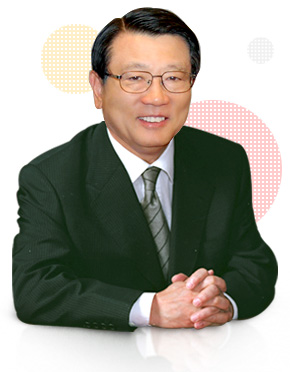

지난 1977년 설립된 금호아시아나문화재단은 ‘문화가 살아야 일류 국가’라는 취지 하에 클래식 음악과 미술, 장학 분야를 지원하며 한국 문화예술 활성화에 앞장서 왔습니다.
금호아시아나문화재단은 클래식 전용 공연장인 금호아트홀과 문호아트홀, 그리고 금호미술관을 운영하면서 국내외 저명 연주자 및 작가를 발굴하여 소개하고, ‘금호월드오케스트라 시리즈’ 와 같은 세계적 수준의 공연사업을 통해 한국의 클래식 팬들이 국내에서 감상하기 어려운 수준 높은 연주무대를 제공하는 등 활발한 문화예술 지원 활동을 펼치고 있습니다.
지난 1977년 설립된 금호아시아나문화재단은 ‘문화가 살아야 일류 국가’라는 취지 하에 클래식 음악과 미술, 장학 분야를 지원하며 한국 문화예술 활성화에 앞장서 왔습니다. 금호아시아나문화재단은 클래식 전용 공연장인 금호아트홀과 문호아트홀, 그리고 금호미술관을 운영하면서 국내외 저명 연주자 및 작가를 발굴하여 소개하고, ‘금호월드오케스트라 시리즈’ 와 같은 세계적 수준의 공연사업을 통해 한국의 클래식 팬들이 국내에서 감상하기 어려운 수준 높은 연주무대를 제공하는 등 활발한 문화예술 지원활동을 펼치고 있습니다.
특히, 금호아시아나문화재단은 한국 문화예술계의 미래가 젊은 인재의 육성에 있다고 보고 음악 미술 분야의 영재를 발굴하여 전도유망한 연주자들에게 명품 고악기를 무상으로 임대하고 항공권을 제공하여 이들의 활발한 세계무대 활동을 지원하는 한편, 금호창작스튜디오를 통해 젊은 작가를 선정하여 작품활동을 장려해 오고 있습니다. 또한 미 래의 한국의 주인공들이 될 학생들에게 장학금을 수여하는 등, 실질적이고 다양한 지원활동을 지속해 오고 있습니다.
금호아시아나문화재단은 세계적 수준의 문화교류를 통해 한국의 위상을 드높이고 또한 젊은 인재들이 세계 무대에 우뚝 서는 그날까지 다양한 지원 활동을 지속하여 우리나라의 우수한 문화 수준을 세계에 널리 알리고, 또한 발전하는 경제 강국으로서의 위상에 걸맞은 문화예술 선진국으로 거듭나는데 기여하고자 합니다.
금호아시아나 문화재단
이사장 박삼구